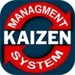
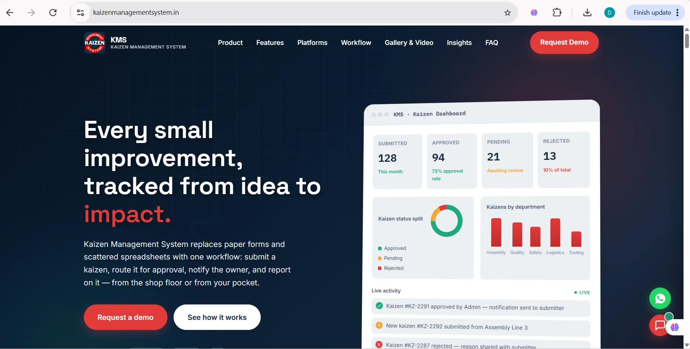
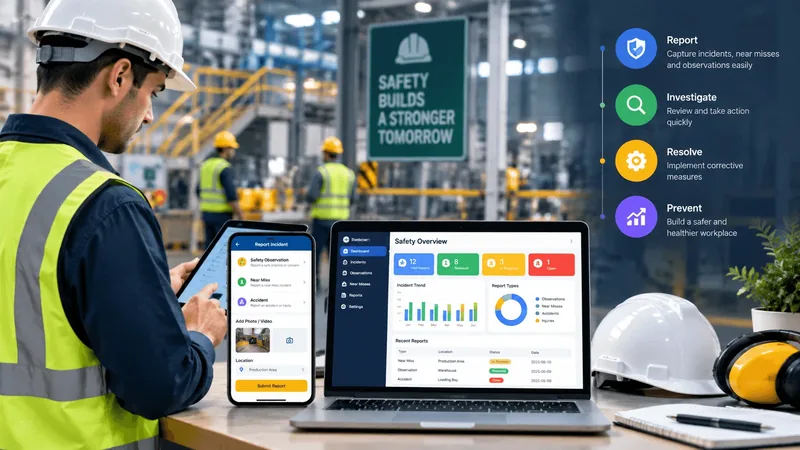
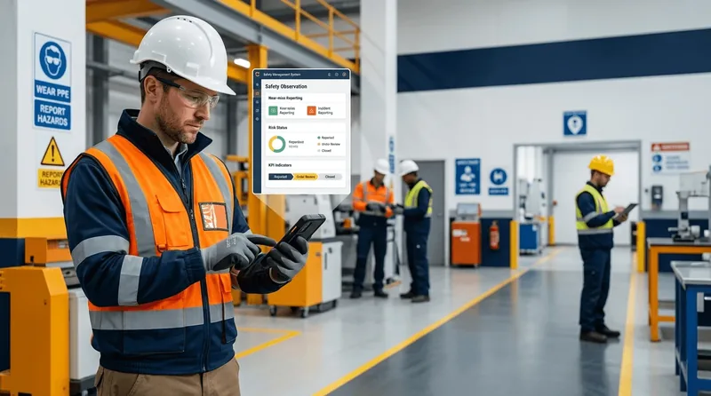
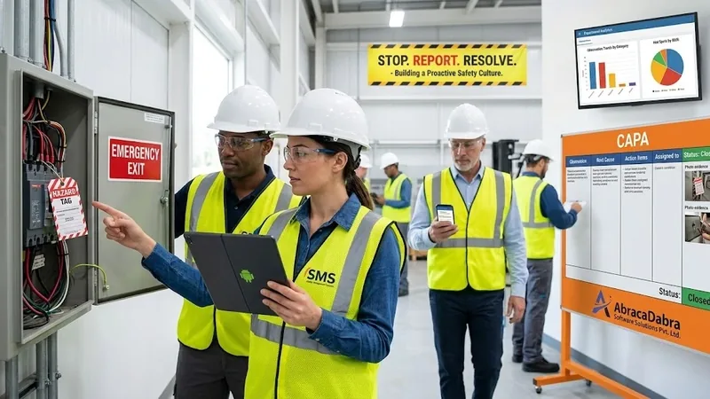
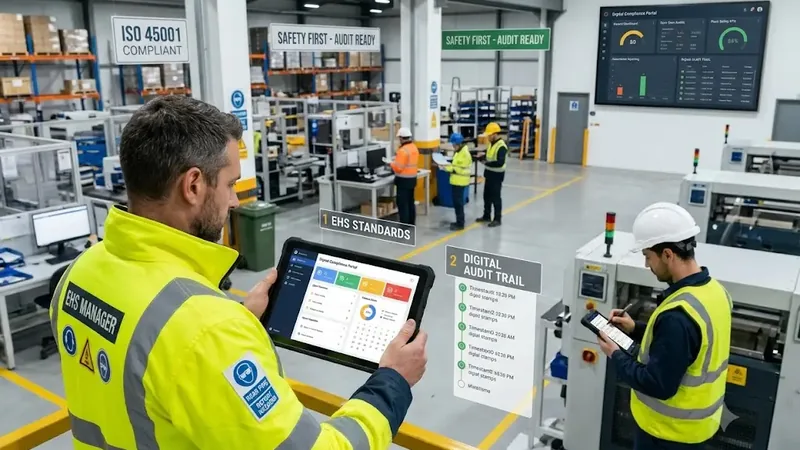

Safety Observation Management
Log unsafe conditions and unsafe behaviours the moment they're spotted — location, category, severity and a short description, filed in under a minute.
Every hazard reported. Every incident resolved. Nothing lost in paperwork. SMS Safety Management System replaces manual registers and scattered spreadsheets with an auditable, mobile-first workflow: report safety observations, accidents, and near misses, route them for review, assign CAPA, and track real-time KPIs from the shop floor to the executive boardroom.
SMS Safety Management System is a mobile-first safety management platform for reporting, reviewing and resolving safety observations, accidents and near-misses — with live KPIs and export-ready reports built in from day one.
Most safety registers stop at "collect the form." SMS Safety Management System carries every report from first capture through to a closed, reportable record.
Reports move through one queue instead of a paper register, so nothing is filed and forgotten. Every status change is timestamped, every decision is logged against the account that made it, and every record stays exportable for the next audit.
Report from the app or web portal in minutes, with a photo and short description.
Admins see every submission in one queue and act with a reason on file.
The reporter hears the moment status changes — no chasing supervisors.
KPIs and auditable PDF/Excel exports are one click away, always.
Paper forms and standalone spreadsheets work for a handful of reports. Past that, visibility disappears and hazards stay open.
No add-ons to configure. Reporting, KPIs, notifications and status tracking come standard with every SMS Safety Management System deployment.
Log unsafe conditions and unsafe behaviours the moment they're spotted — location, category, severity and a short description, filed in under a minute.
Capture accidents with full detail: time, location, people involved, immediate action taken and injury classification, all on one auditable record.
Flag close calls before they become accidents, tracked with the same rigour as any other incident so early warnings don't go unrecorded.
See exactly how many observations, accidents and near-misses were reported, resolved or are pending in any given timeframe, at a single glance.
Every report and its status update live. Approvals, escalations and closures are reflected instantly across mobile and web — zero lag.
The moment a report arrives or its status changes, the reporter and the responsible admin are notified automatically — no manual follow-up required.
Generate an Excel-based auditable report for any timeframe, across any number of users, ready for a safety or quality audit in one click.
Visualise the split of reports by status with a pie chart, and compare distribution across departments with a column chart — both audit-exportable.
Every report keeps a complete, timestamped status history from submission to closure, so nothing about how a decision was reached gets lost.
Four distinct logins, each scoped to exactly what that role needs — from floor reporters to plant safety officers to HR administrators.
Attach before-and-after photos and supporting evidence to every report, stored securely and available for reference whenever it's needed again.
Pull up any report's full lifecycle — who filed it, who actioned it, what changed and when — from a single record.
Live visualizations across all four core SMS modules backed by 1-click auditable Excel & PDF exports.
Comparative volume breakdown across Safety Observations, Near Misses, Accidents, and Ethics Complaints.
Real-time status progression from submission through investigation to closed auditable records.
The web portal, Android app and iOS app all read and write the same record, so a report filed on the floor shows up instantly for an admin at a desk.
The full admin and HR console for reviewing, actioning and reporting on safety data.
Report and track safety incidents straight from the shop floor.
The same submission and tracking workflow, on iPhone.
Every account sees exactly what its role requires — from shop-floor workers to executive directors.
Frontline participation: report safety observations, near-misses, accidents, and confidential ethics complaints with evidence.
Department-level supervision: first-level operational review, evidence inspection, and team safety oversight.
Company-wide EHS administration: final status progression, status verification, plant KPI analytics, and audit exports.
User administration & organizational governance: managing accounts, role provisioning, and department mapping.
Strategic visibility: executive-level EHS monitoring, plant trend analytics, and audit oversight without changing operational statuses.
A standardized, auditable process for every safety observation, near-miss, and accident reported on site.
Employees report a safety observation, accident or near-miss with photos, location, and severity tag.
Report instantly enters the admin console queue under pending status, visible to all stakeholders.
Safety admin reviews details, assigns CAPA resolution notes, updates status, and logs official decisions.
Automated alerts intimate the submitter and department heads immediately upon status changes.
Live safety KPI dashboards update automatically, and auditable Excel/PDF exports are generated anytime.
A look at the SMS Safety Management System web console and mobile experience — from submission to admin review to plant-wide KPIs.
Explore the SMS Safety mobile experience — intuitive interfaces for reporting, tracking and account management on the shop floor.
Explore the complete workflow — reporting safety observations, near-misses, admin review, and auditable KPI reports.
SMS Safety Management System shares its underlying platform with AbracaDabra Software Solutions' Kaizen Management System, already running across multiple plant locations in India.
Haldex India, a manufacturer with multiple office and plant locations across the country, runs its continuous-improvement workflow on AbracaDabra's platform. SMS Safety Management System extends that same proven system to safety observation, accident and near-miss reporting.
SMS Safety Management System shares its audit-first engine with our Kaizen Management System — built for continuous-improvement registers on the same web, Android and iOS stack.

Sister productDigitise your kaizen register the same way SMS Safety Management System digitises safety: submit → review → notify → report, with a live KPI dashboard and auditable Excel/PDF exports — deployed with Haldex India today.

From automotive assembly lines to process manufacturing and logistics centers, SMS Safety Management System delivers purpose-built workflows aligned with Indian and international safety standards.
Empowers shop-floor workers to log unsafe conditions and near misses on high-speed assembly and machining lines. Deployed and proven across multiple plant locations with Haldex India.
Standardized hazard identification and CAPA tracking for welding, pressing, lifting, and tooling operations with photo evidence attached directly to each incident dossier.
Comprehensive incident analysis, body-part injury mapping, root-cause logging, and structured investigation lifecycles for process safety management and occupational health.
Monitors forklift movement, material handling near misses, dock safety, and pedestrian corridor observations with instant mobile push notifications via Firebase.
Built to satisfy ISO 45001 Clauses 9 and 10 (performance evaluation and incident investigation) and the Indian Factories Act, 1948 with tamper-proof timestamped audit trails.
Strict segregation of duties across Employee, Department Manager, EHS Safety Admin, HR Administrator, and Executive Director to maintain operational integrity.
Key technical insights on workplace safety culture, incident reporting, near-miss risk reduction, and safety compliance software.

Learn how a digital Safety Management System helps organizations build a positive safety culture through faster reporting, transparent workflows, and proactive risk reduction.

See how safety management software transforms near-miss reporting into proactive risk reduction, preventing workplace accidents before they happen.
See how AbracaDabra's Safety Management System replaces paper safety registers with digital incident, accident and near-miss reporting for industrial teams.

Discover how safety observation software empowers floor teams to capture unsafe conditions, implement CAPA workflows, and prevent workplace accidents.

Learn how digital safety compliance software streamlines statutory reporting, ISO 45001 audits, and executive EHS governance with instant Excel and PDF exports.
Everything plant safety officers, EHS leaders, and IT teams ask before deploying SMS Safety Management System.
Tell us a little about your plant and we'll walk you through the web portal and app on a live call.
Fields marked * are required.